This page will contain projects completed using R Markdown. These are examples of exploratory data analysis as the format is unstructured. I highly recommend using it for projects in RStudio, along with the tidyverse, a collection of R packages for data science. Here is a useful tidyverse cheatsheet.
Snow gauges are used to indirectly measure the density of snow; a high snow density leads to less absorption of water. Analyzing this information is important because we want to monitor water levels and prevent floods from occurring. My analysis involves specifying the relationship between density of polyethylene blocks (a substitute for snow) and gain – an amplified version of gamma photon count.
Let’s load the tidyverse package and the snow gauge data.
library(tidyverse)
# Load data
gauge <- readr::read_table("https://www.stat.berkeley.edu/~statlabs/data/gauge.data",col_types = "dd")
gauge <- gauge[rowSums(is.na(gauge)) != ncol(gauge),]
glimpse(gauge)## Rows: 90
## Columns: 2
## $ density <dbl> 0.686, 0.686, 0.686, 0.686, 0.686, 0.686, 0.686, 0.686, 0.686, 0.~
## $ gain <dbl> 17.6, 17.3, 16.9, 16.2, 17.1, 18.5, 18.7, 17.4, 18.6, 16.8, 24.8,~Let’s plot the data and residuals.
# Plot density vs gain
gauge %>%
ggplot(aes(x=gain, y=density)) +
theme_classic() +
geom_point(pch=21) +
labs(title="Density vs Gain",
subtitle="Gauge data",
x="Gain",
y="Density"~(g/cm^{3}))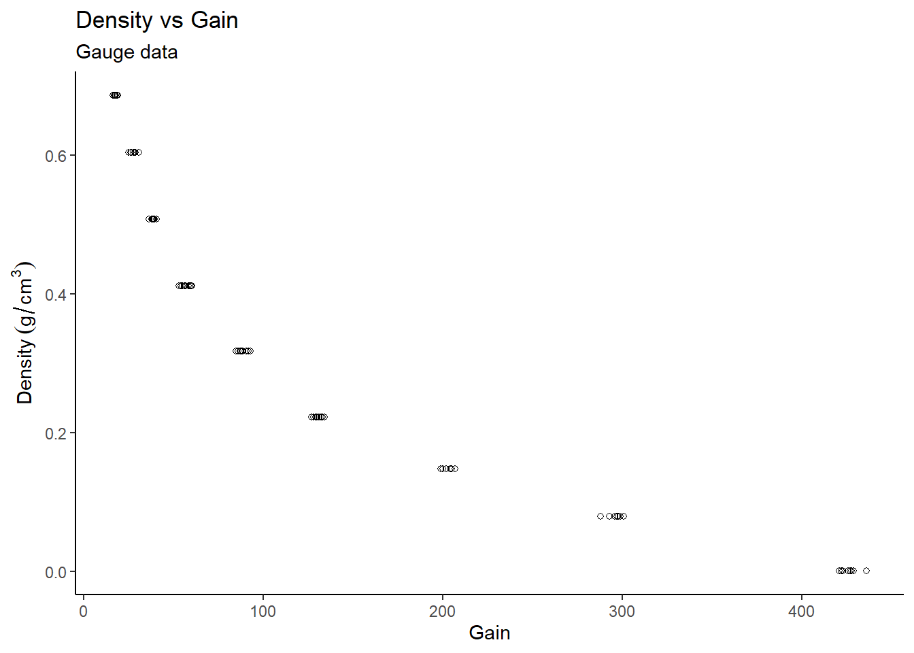
# Residuals
gauge_lm1 <- lm(density~gain, data=gauge)
data.frame(resid = residuals(gauge_lm1),
fitted = fitted(gauge_lm1)) %>%
mutate_at("resid",funs( (. - mean(.)) / sd(.))) %>%
ggplot(aes(x = fitted,y = resid)) +
theme_classic() +
geom_point(pch=21) +
geom_hline(yintercept = 0) +
geom_hline(yintercept = -2,linetype="dashed",colour="red") +
geom_hline(yintercept = 2,linetype="dashed",colour="red") +
labs(title = "Residuals vs Fitted Values",
subtitle = "Normal linear model for Gauge data",
x = "Fitted Values",
y = "Residuals")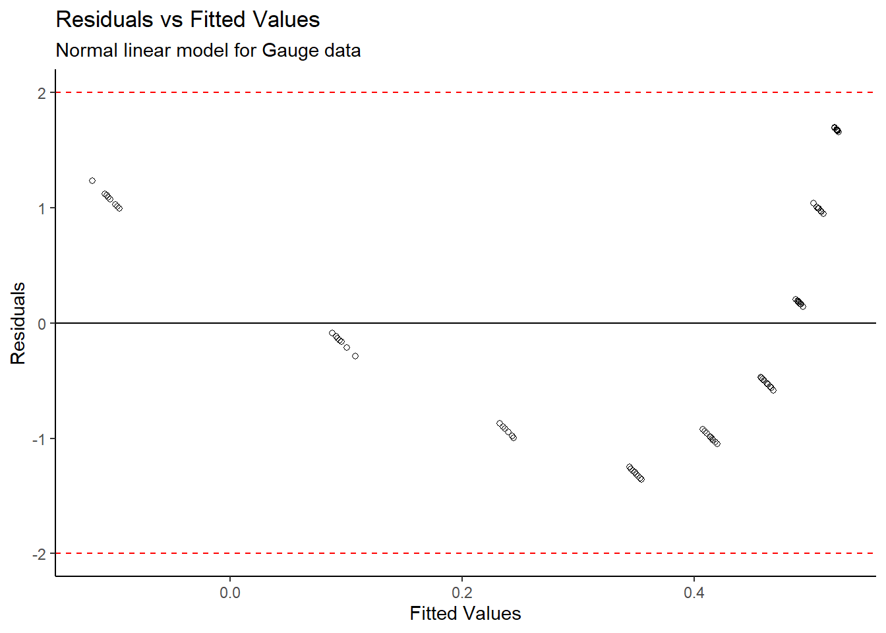
From the Density vs Gain plot, it appears as though there is an inverse exponential relationship between the variables. A linear model was initially created, however the standardized residuals appear to follow a distinct pattern, so a standard linear model cannot directly be fit to the data. We need to transform the data.
#Box-Cox transformation
library(MASS)
gain_boxcox <- boxcox(gain ~ 1,data=gauge)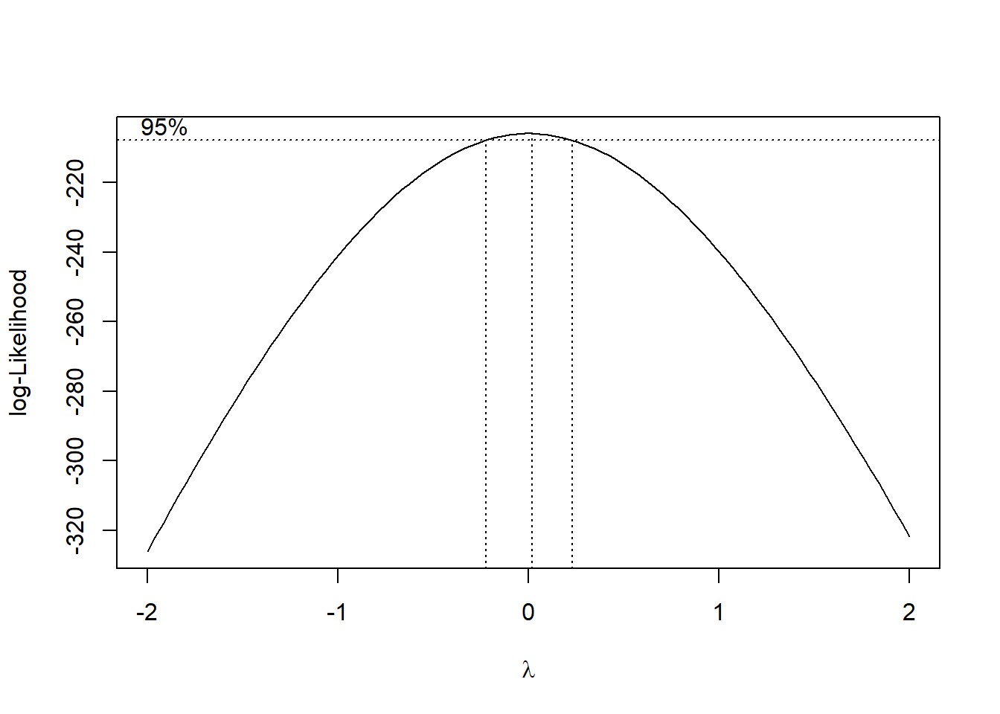
gain_boxcox$x[which(gain_boxcox$y == max(gain_boxcox$y))]## [1] 0.02020202#Log transformation
gauge_transform <- gauge %>%
mutate(log_gain = log(gain))A box-cox transformation was done on the gain variable, and the plot shows that a value of \(\lambda\) = 0.02020202 is the best power transformation; in this case, a log transformation is appropriate. Now let’s fit a model of density vs log(gain) and make some new plots.
# Plot density vs log(gain)
gauge_transform %>%
ggplot(aes(x=log_gain, y=density)) +
theme_classic() +
geom_point(pch=21) +
geom_smooth(method = "lm") +
labs(title="Density vs log(Gain)",
subtitle="Transformed log model for Gauge data",
x="log(Gain)",
y="Density"~(g/cm^{3}))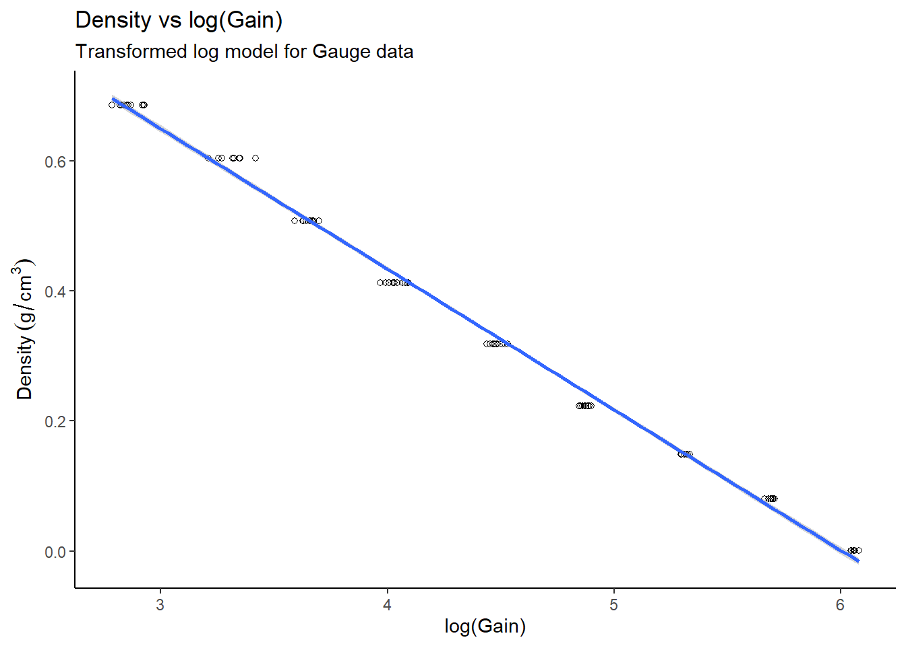
# Residuals
gauge_lm2 <- lm(density ~ log_gain, data=gauge_transform)
data.frame(resid = residuals(gauge_lm2),
fitted = fitted(gauge_lm2)) %>%
mutate_at("resid",funs( (. - mean(.)) / sd(.))) %>%
ggplot(aes(x = fitted,y = resid)) +
theme_classic() +
geom_point(pch=21) +
geom_hline(yintercept = 0) +
geom_hline(yintercept = -2,linetype="dashed",colour="red") +
geom_hline(yintercept = 2,linetype="dashed",colour="red") +
labs(title = "Residuals vs Fitted Values",
subtitle = "Transformed log model for Gauge data",
x = "Fitted Values",
y = "Residuals")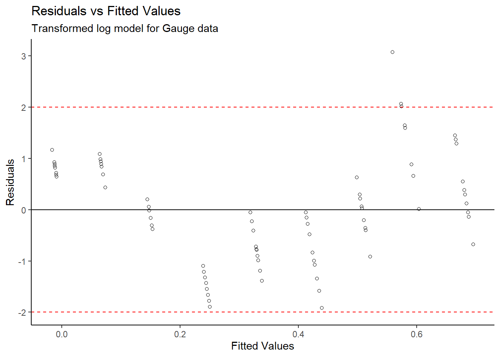
# Normal Q-Q
gauge_transform %>%
mutate_at("log_gain", funs((. - mean(.)) / sd(.))) %>%
arrange(log_gain) %>%
mutate(q = qnorm(1:n() / (n() + 1))) %>%
ggplot(aes(x = q,y = log_gain)) +
theme_classic() +
geom_point(pch=21) +
geom_abline(slope = 1,intercept = 0,colour = "red") +
labs(title = "Normal QQ-plot",
subtitle="Transformed log model for Gauge data",
x = "Theoretical Quantiles",
y = "Sample Quantiles")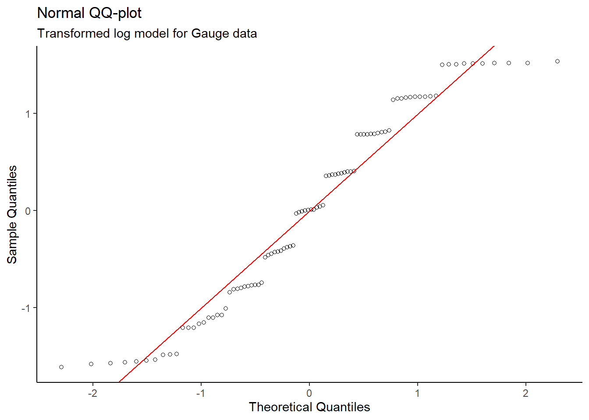
After completing a log transformation on the gain variable, a valid linear model for Density vs log(Gain) was produced since the new Residuals vs Fitted Values plot does not show a distinct pattern. Also, the Normal QQ plot on the transformed data does not show evidence of skew – the normality condition is met.
#Regression Output
summary(gauge_lm2)##
## Call:
## lm(formula = density ~ log_gain, data = gauge_transform)
##
## Residuals:
## Min 1Q Median 3Q Max
## -0.028031 -0.011079 -0.000018 0.011595 0.044911
##
## Coefficients:
## Estimate Std. Error t value Pr(>|t|)
## (Intercept) 1.298013 0.006857 189.3 <2e-16 ***
## log_gain -0.216203 0.001494 -144.8 <2e-16 ***
## ---
## Signif. codes: 0 '***' 0.001 '**' 0.01 '*' 0.05 '.' 0.1 ' ' 1
##
## Residual standard error: 0.01471 on 88 degrees of freedom
## Multiple R-squared: 0.9958, Adjusted R-squared: 0.9958
## F-statistic: 2.096e+04 on 1 and 88 DF, p-value: < 2.2e-16The regression output shows a significant relationship between log(Gain) and density, as the p-value is extremely small. In addition, the multiple R-squared value of 0.9958 provides further evidence that this model is appropriate.
The linear model is: mean density = 1.298013 g/cm3 - (0.216203 g/cm3 * log(gain)). This model can be used to estimate the mean density of snow at a particular value of gain since the snow gauge has now been calibrated, but we must proceed with caution because polyethylene blocks were used in place of snow blocks for the model.
As Dungeness crabs grow, they need to replace their carapace; a process referred to as molting. My analysis involves grouping the adult female Dungeness crabs by whether they recently molted or not, estimating the mean carapace size of both groups, then determining whether there is a significant difference between the groups.
Let’s load the crab growth data.
library(tidyverse)
# Load data
crab <- readr::read_table("https://www.stat.berkeley.edu/users/statlabs/data/crabpop.data",col_types = "dc")
glimpse(crab)## Rows: 362
## Columns: 2
## $ size <dbl> 116.8, 117.1, 118.4, 119.6, 120.1, 120.4, 120.6, 122.6, 123.5, 123.~
## $ shell <chr> "1", "1", "1", "1", "1", "1", "1", "1", "1", "1", "1", "1", "1", "1~First let’s create a boxplot of the shell size (size) by the shell type (shell). Shell type 0 represents a fouled carapace which can be interpreted as an old shell, while shell type 1 represents a clean carapace – a recently molted shell.
#Boxplot
crab %>%
ggplot(aes(x=shell, y=size)) +
theme_classic() +
geom_boxplot() +
labs(title="Boxplot of shell size by type",
subtitle = "Crab Data",
x = "Shell Type",
y = "Shell Size"~(mm))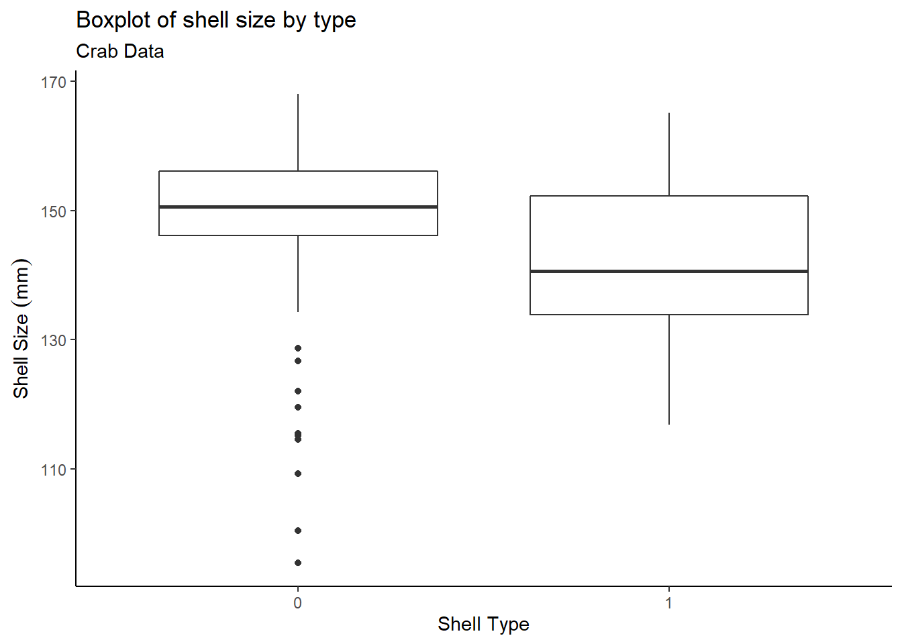
The boxplot shows that older shells contain some outliers, while recent shells have no outliers. Now take a look at the summary statistics:
group_means <- crab %>%
group_by(shell) %>%
summarize(group_mean = mean(size),
group_median = median(size),
group_sd = sd(size),
group_size = n())
group_means## # A tibble: 2 x 5
## shell group_mean group_median group_sd group_size
## <chr> <dbl> <dbl> <dbl> <int>
## 1 0 149. 151. 11.3 161
## 2 1 142. 141. 11.4 201So type 0 shells are larger than type 1 shells by about 7mm on average. The next part involves statistical tests:
t_test <- t.test(size ~ shell, data = crab, var.equal = TRUE)
t_test##
## Two Sample t-test
##
## data: size by shell
## t = 5.8328, df = 360, p-value = 1.215e-08
## alternative hypothesis: true difference in means between group 0 and group 1 is not equal to 0
## 95 percent confidence interval:
## 4.637563 9.355447
## sample estimates:
## mean in group 0 mean in group 1
## 149.1099 142.1134f_test <- var.test(size ~ shell, data = crab)
f_test##
## F test to compare two variances
##
## data: size by shell
## F = 0.97771, num df = 160, denom df = 200, p-value = 0.8851
## alternative hypothesis: true ratio of variances is not equal to 1
## 95 percent confidence interval:
## 0.729754 1.316331
## sample estimates:
## ratio of variances
## 0.9777051The two sample t-test yielded a statistically significant p-value; this indicates that the means of the 2 groups are not equivalent. The two sample groups are independent, since the traps that were used were designed to catch adult female Dungeness crabs of all sizes, meaning that this sample is representative of the population. An F-test to compare two variances shows that the two sample group variances are similar – the constant variance condition is met.
Let’s check for normality:
#Normal QQ
crab %>%
mutate_at("size",funs( (. - mean(.)) / sd(.))) %>%
arrange(size) %>%
mutate(q = qnorm(1:n() / (n() + 1))) %>%
ggplot(aes(x = q,y = size)) +
theme_classic() +
geom_point(pch=21) +
geom_abline(slope = 1,intercept = 0,colour = "red") +
labs(title = "Normal QQ-plot",
subtitle = "Crab Data",
x = "Theoretical Quantiles",
y = "Sample Quantiles")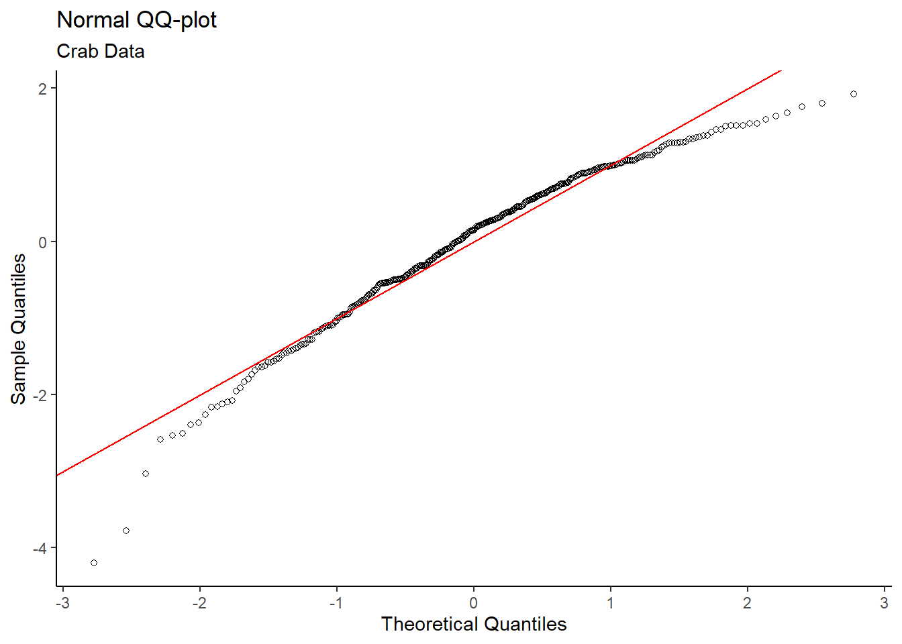
# Histogram
crab %>%
ggplot(aes(x = size)) +
theme_classic() +
geom_histogram(aes(y = ..density..),colour="black",fill="lightblue",bins = 15) +
geom_density(colour = "red") +
labs(title = "Histogram of Shell Size",
subtitle = "Crab Data",
x = "Shell Size (mm)",
y = "Density")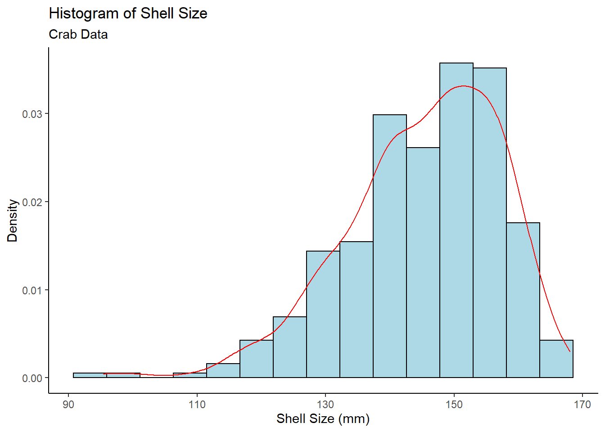
Both the Normal QQ Plot and Histogram of Shell Size show skew in the data, which may be a problem. Fortunately, the sample size of 362 (161 type 0, 201 type 1) is sufficiently large. By the Central Limit Theorem, means of samples from a population approach a normal distribution as sample size increases – regardless of the population distribution. Thus, the normality condition for the t-test is met.
Given the strong supporting evidence, adult female Dungeness crabs with older carapaces (shell type 0) on average have larger shells than those with recently molted carapaces (shell type 1).
When deciding on how to treat prostate cancer, physicians use a cancer staging system which takes into account the presence of cancer in the surrounding lymph nodes, referred to as nodal involvement. My analysis involves determining whether prostate cancer has spread to the lymph nodes based on certain characteristics.
Let’s load the data from the SMPracticals package:
library(tidyverse)
# Load SMPracticals package
# install.packages("SMPracticals")
library(SMPracticals)
data(nodal)
nodal_tbl <- as.data.frame(nodal)
dplyr::glimpse(nodal_tbl)## Rows: 53
## Columns: 7
## $ m <dbl> 1, 1, 1, 1, 1, 1, 1, 1, 1, 1, 1, 1, 1, 1, 1, 1, 1, 1, 1, 1, 1, 1, 1~
## $ r <dbl> 1, 1, 1, 1, 1, 0, 1, 0, 0, 0, 0, 0, 0, 0, 0, 0, 1, 1, 0, 0, 0, 0, 0~
## $ aged <fct> 0, 0, 0, 0, 0, 0, 0, 0, 0, 0, 0, 0, 1, 1, 1, 1, 1, 1, 1, 1, 0, 0, 0~
## $ stage <fct> 1, 1, 1, 1, 1, 1, 0, 0, 0, 0, 0, 0, 1, 1, 1, 1, 1, 1, 1, 1, 0, 0, 0~
## $ grade <fct> 1, 1, 1, 1, 1, 1, 0, 0, 0, 0, 0, 0, 1, 1, 1, 1, 0, 0, 0, 0, 0, 0, 0~
## $ xray <fct> 1, 1, 1, 1, 1, 1, 0, 0, 0, 0, 0, 0, 0, 0, 0, 0, 0, 0, 0, 0, 0, 0, 0~
## $ acid <fct> 1, 1, 1, 1, 1, 1, 1, 1, 1, 1, 1, 1, 0, 0, 0, 0, 1, 1, 1, 1, 0, 0, 0~Starting with the Nodal Involvement by Predictor graph, it is difficult to tell whether any of the five characteristics are successful in predicting nodal involvement.
# Nodal involvement by predictor
nodal_tbl %>%
gather(variable,value,aged:acid) %>%
ggplot(aes(x = value,y = r)) +
theme_classic() +
facet_wrap(~variable) +
geom_jitter(width=0.3,height=0.3,alpha = 0.4) +
scale_y_continuous(breaks = c(0,1),labels = c("No Involvement","Nodal Involvement")) +
labs(title = "Nodal Involvement, by Predictor",
subtitle = "Nodal Data",
x = "Predictor Value",
y = "Nodal Involvement?")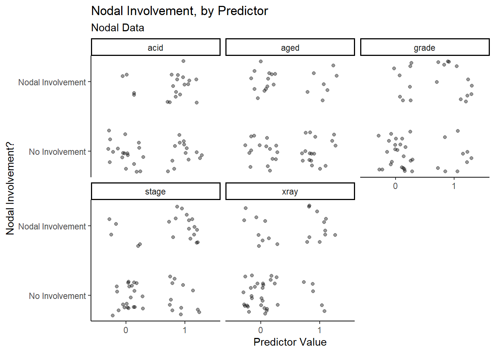
Upon closer inspection, it appears as though stage, acid and xray have more true positive and true negative data points than false positive and false negative data points, which means that they may have a higher success rate when predicting nodal involvement.
Let’s try fitting a model:
# Fit an initial binary logistic regression model
nodal_glm1 <- glm(r ~ aged + stage + grade + xray + acid,data = nodal_tbl,family = binomial)
summary(nodal_glm1)##
## Call:
## glm(formula = r ~ aged + stage + grade + xray + acid, family = binomial,
## data = nodal_tbl)
##
## Deviance Residuals:
## Min 1Q Median 3Q Max
## -2.3317 -0.6653 -0.2999 0.6386 2.1502
##
## Coefficients:
## Estimate Std. Error z value Pr(>|z|)
## (Intercept) -3.0794 0.9868 -3.121 0.0018 **
## aged1 -0.2917 0.7540 -0.387 0.6988
## stage1 1.3729 0.7838 1.752 0.0799 .
## grade1 0.8720 0.8156 1.069 0.2850
## xray1 1.8008 0.8104 2.222 0.0263 *
## acid1 1.6839 0.7915 2.128 0.0334 *
## ---
## Signif. codes: 0 '***' 0.001 '**' 0.01 '*' 0.05 '.' 0.1 ' ' 1
##
## (Dispersion parameter for binomial family taken to be 1)
##
## Null deviance: 70.252 on 52 degrees of freedom
## Residual deviance: 47.611 on 47 degrees of freedom
## AIC: 59.611
##
## Number of Fisher Scoring iterations: 5An initial binary logistic regression model shows that acid and xray are considered somewhat significant, stage is close to the standard significance level of 0.05, while age and grade are not close to the significance level at all.
To explore the potentially significant predictors further, let’s fit a second binary logistic regression model, with nodal involvement (r) as the response and stage, acid and xray as the predictors.
# Try simpler binary logistic regression model
nodal_glm2 <- glm(r ~ stage + xray + acid,data = nodal_tbl,family = binomial)
summary(nodal_glm2)##
## Call:
## glm(formula = r ~ stage + xray + acid, family = binomial, data = nodal_tbl)
##
## Deviance Residuals:
## Min 1Q Median 3Q Max
## -2.1231 -0.6620 -0.3039 0.4710 2.4892
##
## Coefficients:
## Estimate Std. Error z value Pr(>|z|)
## (Intercept) -3.0518 0.8420 -3.624 0.00029 ***
## stage1 1.6453 0.7297 2.255 0.02414 *
## xray1 1.9116 0.7771 2.460 0.01390 *
## acid1 1.6378 0.7539 2.172 0.02983 *
## ---
## Signif. codes: 0 '***' 0.001 '**' 0.01 '*' 0.05 '.' 0.1 ' ' 1
##
## (Dispersion parameter for binomial family taken to be 1)
##
## Null deviance: 70.252 on 52 degrees of freedom
## Residual deviance: 49.180 on 49 degrees of freedom
## AIC: 57.18
##
## Number of Fisher Scoring iterations: 5# Analyze the deviance
anova(nodal_glm2, test="Chisq")## Analysis of Deviance Table
##
## Model: binomial, link: logit
##
## Response: r
##
## Terms added sequentially (first to last)
##
##
## Df Deviance Resid. Df Resid. Dev Pr(>Chi)
## NULL 52 70.252
## stage 1 7.6995 51 62.553 0.005524 **
## xray 1 8.0901 50 54.463 0.004451 **
## acid 1 5.2822 49 49.180 0.021544 *
## ---
## Signif. codes: 0 '***' 0.001 '**' 0.01 '*' 0.05 '.' 0.1 ' ' 1The analysis of deviance table for the second model shows a significant reduction in the residual deviance as each of the three variables are added to the null model.
# Transform factor type into numeric type
nodal_transform <- transform(nodal_tbl, aged = as.numeric(aged),
stage = as.numeric(stage),
grade = as.numeric(grade),
xray = as.numeric(xray),
acid = as.numeric(acid))
# Correlation matrix
round(cor(nodal_transform %>% dplyr::select(-c(m,r))),2)## aged stage grade xray acid
## aged 1.00 0.06 -0.19 -0.10 -0.20
## stage 0.06 1.00 0.41 0.15 0.13
## grade -0.19 0.41 1.00 0.22 0.01
## xray -0.10 0.15 0.22 1.00 0.16
## acid -0.20 0.13 0.01 0.16 1.00# We can visualize this better using corrplot
corrplot::corrplot(cor(nodal_transform %>% dplyr::select(-c(m,r))),order="AOE")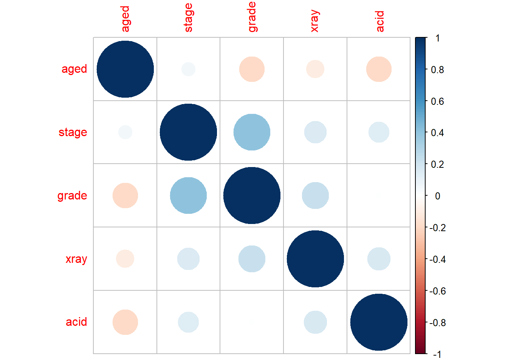
In regards to the model assumptions, the values are discrete (0 or 1) and there are also no outliers in the data since the z-value for each predictor is under 3. Also, there is low intercorrelation among the predictors, as shown in the correlation matrix.
To clarify what each predictor represents, stage is a measure of the size and position of the tumour, xray indicates how serious the cancer is from an X-ray reading, and acid represents the level of acid phosphatase in the blood serum. These three variables may be helpful indicators of nodal involvement in prostate cancer, from evidence provided by the model. However, physicians should proceed with caution as there are some observations which incorrectly predict nodal involvement.
Smoking is a major health concern among the population, however many individuals of numerous age groups continue to smoke. The goal is to analyze potential relationships between age group, smoking status and mortality rate among women.
Let’s load and view the data:
library(tidyverse)
#Load data from the library
library(SMPracticals)
data(smoking)
smoking_tbl <- as.data.frame(smoking)
dplyr::glimpse(smoking_tbl)## Rows: 14
## Columns: 4
## $ age <fct> 18-24, 18-24, 25-34, 25-34, 35-44, 35-44, 45-54, 45-54, 55-64, 55-~
## $ smoker <dbl> 1, 0, 1, 0, 1, 0, 1, 0, 1, 0, 1, 0, 1, 0
## $ alive <dbl> 53, 61, 121, 152, 95, 114, 103, 66, 64, 81, 7, 28, 0, 0
## $ dead <dbl> 2, 1, 3, 5, 14, 7, 27, 12, 51, 40, 29, 101, 13, 64Now we need a way to view correlations between variables before fitting any models, and in this case a table is most suitable.
# Relationship between mortality and smoking
xtabs(cbind(dead,alive) ~ smoker,data=smoking_tbl) %>% prop.table(1)##
## smoker dead alive
## 0 0.3142077 0.6857923
## 1 0.2388316 0.7611684Looking at potential relationships, the first table shows that a greater proportion of smokers in the study were alive after 20 years than non-smokers.
Let’s try a binomial regression model:
# Binomial regression, mortality against smoking
smoking_glm1 <- glm(cbind(dead,alive) ~ smoker, data = smoking_tbl, family = binomial)
summary(smoking_glm1)##
## Call:
## glm(formula = cbind(dead, alive) ~ smoker, family = binomial,
## data = smoking_tbl)
##
## Deviance Residuals:
## Min 1Q Median 3Q Max
## -9.052 -5.674 -1.869 5.776 12.173
##
## Coefficients:
## Estimate Std. Error z value Pr(>|z|)
## (Intercept) -0.78052 0.07962 -9.803 < 2e-16 ***
## smoker -0.37858 0.12566 -3.013 0.00259 **
## ---
## Signif. codes: 0 '***' 0.001 '**' 0.01 '*' 0.05 '.' 0.1 ' ' 1
##
## (Dispersion parameter for binomial family taken to be 1)
##
## Null deviance: 641.5 on 13 degrees of freedom
## Residual deviance: 632.3 on 12 degrees of freedom
## AIC: 683.29
##
## Number of Fisher Scoring iterations: 4The binomial regression model for mortality against smoking shows a significant negative relationship between the variables, which indicates that smoking decreases mortality rate. This is unexpected, but another factor (age) has not been taken into account, which could explain this unusual relationship. Also, the residual deviance is quite large compared to its degrees of freedom, so this model is not a good fit.
To investigate this unintuitive relationship, we display a different table to show the relationship between smoking and age in groups of dead or alive.
# Relationship between smoking and age in two groups: dead or alive.
xtabs(cbind(dead,alive) ~ smoker + age,data=smoking_tbl) %>% prop.table(2)## , , = dead
##
## age
## smoker 18-24 25-34 35-44 45-54 55-64 65-74
## 0 0.008547009 0.017793594 0.030434783 0.057692308 0.169491525 0.612121212
## 1 0.017094017 0.010676157 0.060869565 0.129807692 0.216101695 0.175757576
## age
## smoker 75+
## 0 0.831168831
## 1 0.168831169
##
## , , = alive
##
## age
## smoker 18-24 25-34 35-44 45-54 55-64 65-74
## 0 0.521367521 0.540925267 0.495652174 0.317307692 0.343220339 0.169696970
## 1 0.452991453 0.430604982 0.413043478 0.495192308 0.271186441 0.042424242
## age
## smoker 75+
## 0 0.000000000
## 1 0.000000000In this table, there is a larger proportion of younger women who smoke, relative to older women who smoke. Many of these younger women who smoke were still alive after 20 years into the study, while many of the older women passed away.
Now try another binomial regression model, but with age groups as a predictor:
# Binomial regression, mortality against age and smoking
smoking_glm2 <- glm(cbind(dead,alive) ~ age + smoker, data = smoking_tbl, family = binomial)
summary(smoking_glm2)##
## Call:
## glm(formula = cbind(dead, alive) ~ age + smoker, family = binomial,
## data = smoking_tbl)
##
## Deviance Residuals:
## Min 1Q Median 3Q Max
## -0.72545 -0.22836 0.00005 0.19146 0.68162
##
## Coefficients:
## Estimate Std. Error z value Pr(>|z|)
## (Intercept) -3.8601 0.5939 -6.500 8.05e-11 ***
## age25-34 0.1201 0.6865 0.175 0.861178
## age35-44 1.3411 0.6286 2.134 0.032874 *
## age45-54 2.1134 0.6121 3.453 0.000555 ***
## age55-64 3.1808 0.6006 5.296 1.18e-07 ***
## age65-74 5.0880 0.6195 8.213 < 2e-16 ***
## age75+ 27.8073 11293.1430 0.002 0.998035
## smoker 0.4274 0.1770 2.414 0.015762 *
## ---
## Signif. codes: 0 '***' 0.001 '**' 0.01 '*' 0.05 '.' 0.1 ' ' 1
##
## (Dispersion parameter for binomial family taken to be 1)
##
## Null deviance: 641.4963 on 13 degrees of freedom
## Residual deviance: 2.3809 on 6 degrees of freedom
## AIC: 65.377
##
## Number of Fisher Scoring iterations: 20This model is a very strong fit since the residual deviance is quite small relative to its degrees of freedom. Now that age has been accounted for, the smoker variable is positively correlated with mortality; this is an example of Simpson’s paradox. The dependence of smoking status and mortality rate are explained by their respective relationship with age (i.e. smoking and mortality are dependent, conditional on age).
If investigators in this study did not measure age, they may have incorrectly concluded that smoking correlates with a lower risk of death. In observational studies such as this one, investigators need to be careful in drawing conclusions before considering other factors that can influence relationships between the variables of interest.